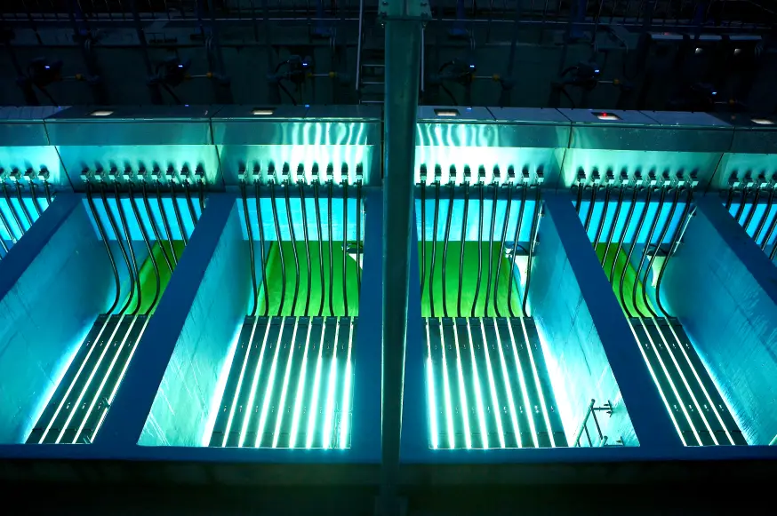
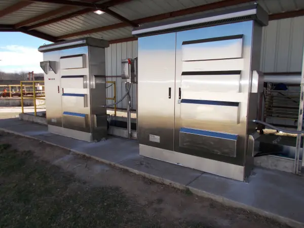
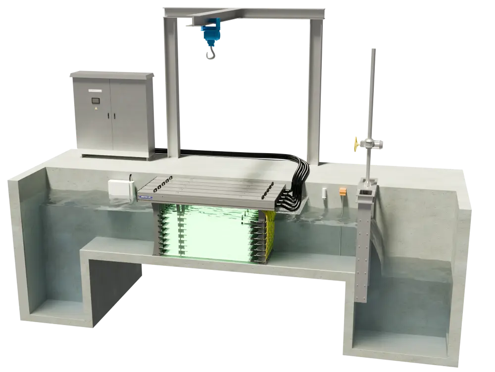

| 项目 | 规格 |
|---|---|
| 典型应用 | 小型至大型水处理厂 |
| 灯管配置 | 水平布置，与水流方向平行 |
| 模块配置 | 每个模块 2–16 支灯管 |
| 水位控制（选配） | ALC（配重式液位控制闸门）、电动堰门或固定堰 |
| 模块材质 | STS304 / STS316 / STS316L |
| 灯管类型 | 低压汞齐灯 / 320 W |
| 清洗系统 | 配备限位开关的电动自动擦拭机构 |
| 监测装置 | UV 强度监测仪、液位传感器 |
| 运行水温 | +5°C- +45 |


Personal Information Processing Policy: Neotech UV collects only the minimum necessary information required to process corporate consultations and deliver professional service inquiries.
Data Items Collected: Inquiry Type, Name, Mobile Phone Number, Email Address, and Message Details.
Purpose of Collection: To evaluate and respond to customer inquiries, facilitate engineering consultation, and maintain a historical reference for ongoing client communication.
Retention Period: All submitted information is securely retained for a period of 2 years following receipt, after which it is permanently deleted.
Cookie Policy: Neotech UV does not collect, store, or track cookie data. Our website is designed to be a static information portal. It is a private browsing experience without user tracking or sessions.